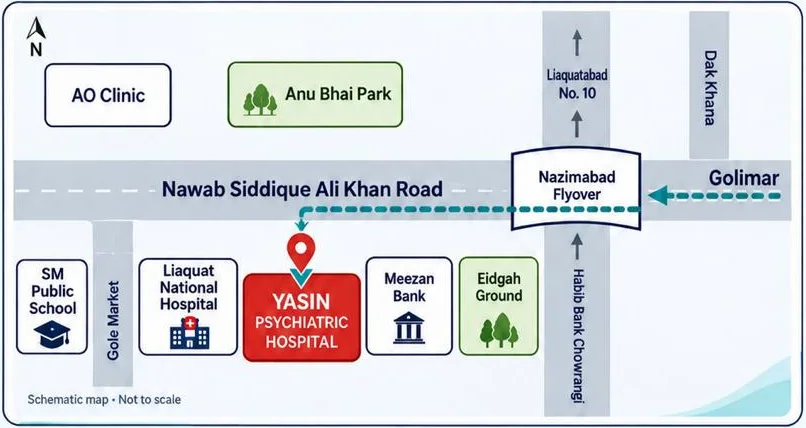

Yasin Psychiatric Hospital
Contact Yasin Psychiatric Hospital
Call or WhatsApp reception to book an appointment, ask about admission, confirm consultation fees or arrange a video consultation.
Call, WhatsApp or email
Mobile · 0330 7997999 WhatsApp · 0330 7997999 Landline · 021 36613267 yasinhospital1@yahoo.comVisit us
Yasin Psychiatric Hospital, Main Nawab Siddique Ali Khan Road, Nazimabad No. 3, Karachi, Pakistan. We are near Eidgah Ground, next to Meezan Bank. If you are coming from Golimar, turn left immediately after the Nazimabad Flyover.
Get directions
Psychiatric emergencies
If someone has seriously harmed themselves, taken an overdose or cannot stay safe, go to the nearest hospital emergency department immediately or call local emergency services. Reception can answer routine questions about the hospital’s psychiatric emergency service.
Speak with our reception team
Ask about appointments, admissions or telepsychiatry.